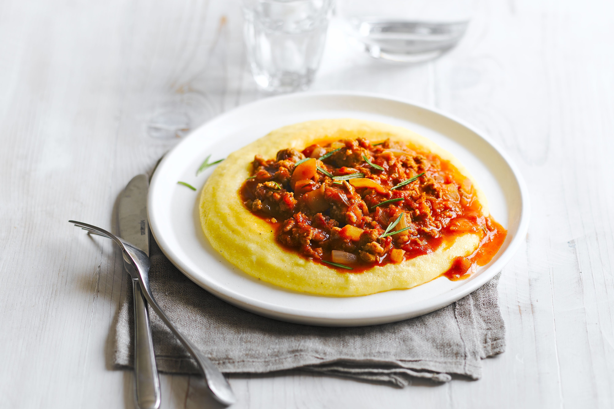
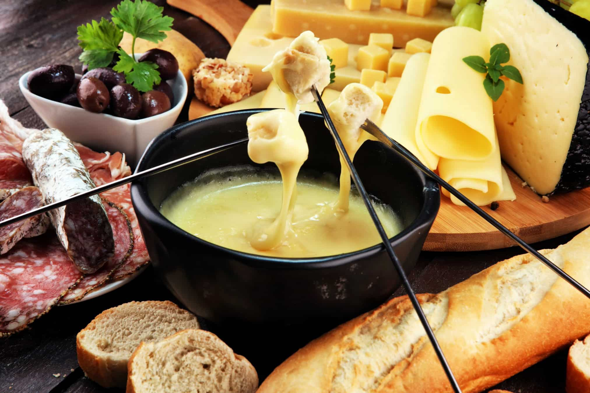
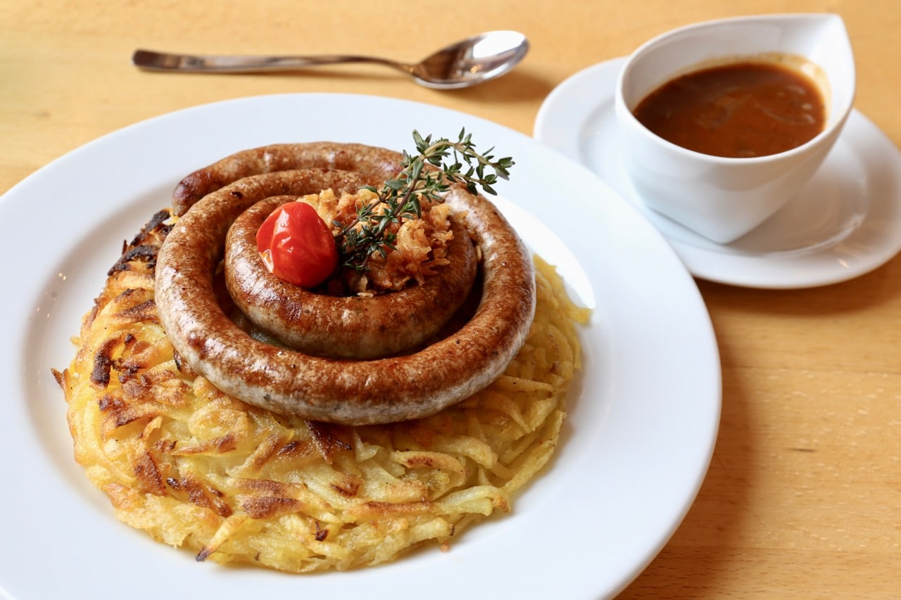
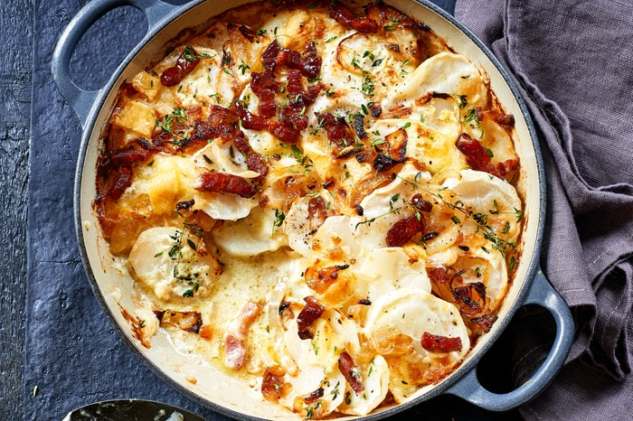
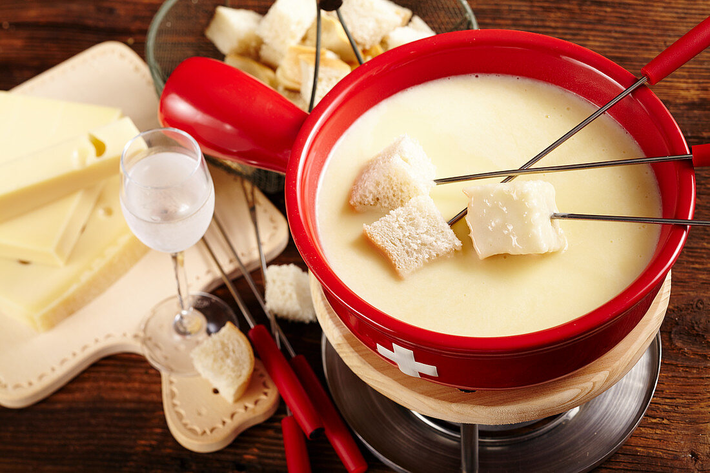
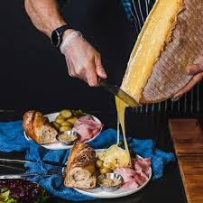
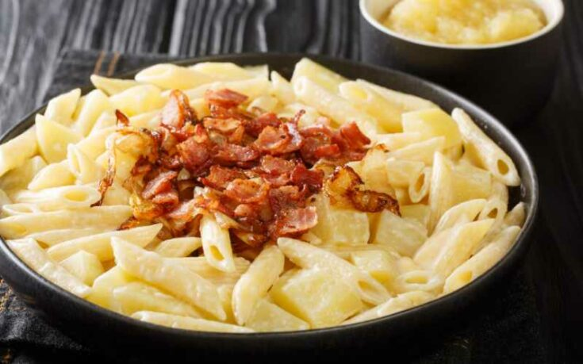
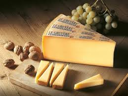
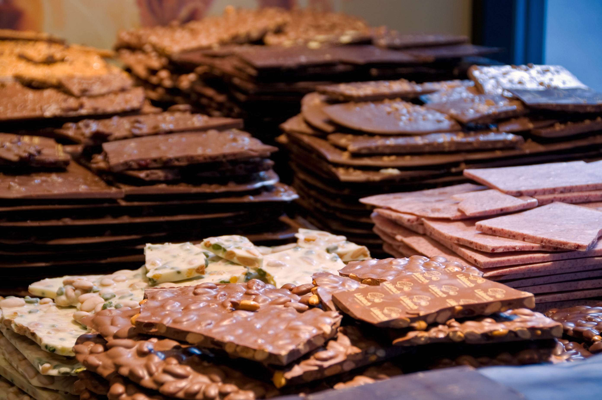

Switzerland |
Gastronomy |
| |Home |Sports |Gastronomy | Places | Economy |forms | |
Swiss gastronomy is a hearty, regional & diverse culinary melting pot cuisine, shaped by its Alpine geography and cultural influences blending German, French, and Italian influences, built on high-quality local dairy, meats, potatoes, and bread. While world-famous for iconic dishes like Fondue, Raclette, and Rösti, alongside world-renowned Swiss chocolate & cheese, Swiss cuisine is deeply regional, with each canton offering unique specialties rooted in local farming traditions, varying by language region (Italian-style risotto in Ticino, creamy sauces in French-speaking areas). |
 |
|  |
Swiss raclette is both a traditional semi-hard cow's milk cheese and the social dining experience named after it. Originating in the Swiss Alps, the dish centers on melting cheese and scraping it over a variety of savory accompaniments like potatoes and pickles. |
Swiss Rösti is a traditional potato dish and a national culinary icon of Switzerland. Originally a hearty breakfast for farmers in the canton of Bern, it has evolved into a versatile side dish or main meal served throughout the country. |
|
| Swiss fondue is the national dish of Switzerland, consisting of melted cheese and white wine served in a communal ceramic or cast-iron pot ("caquelon"). It is traditionally shared by dipping cubes of crusty bread into the mixture using long-stemmed forks. |
 |
 |
Zürcher Geschnetzeltes is a traditional Swiss dish consisting of thinly sliced veal in a creamy mushroom sauce, typically served with rösti. As the name suggests ("Zurich-style sliced meat"), the dish originates from Zurich. |
|  |
Swiss Birchermüesli is the original "overnight oats," a classic breakfast dish created in Switzerland around 1900. Developed by physician Dr. Maximilian Bircher-Benner as a health supplement for his patients, it was designed to maximize the nutritional benefits of raw fruit. |
Swiss chocolate is renowned globally for its smooth, melting texture and pioneering role in inventing milk chocolate. Its reputation rests on 19th-century innovations like conching, which creates a velvety feel without grittiness, and the use of high-quality Alpine milk. |
 |
| Älplermagronen is a classic Swiss dish from the Alpine region, combining pasta and potatoes in a creamy cheese sauce. |
 |
 |
Swiss Gruyère (officially Le Gruyère AOP) is a traditional hard cheese from Switzerland known for its rich, nutty, and slightly sweet flavor. Produced since at least 1115, it is a protected designation of origin (AOP) product, meaning it can only be made in specific Swiss cantons using traditional methods and unpasteurized cow's milk. |
Copyright 2026 Ivana, Ivonne, Sarahi, Romi & Pau © |